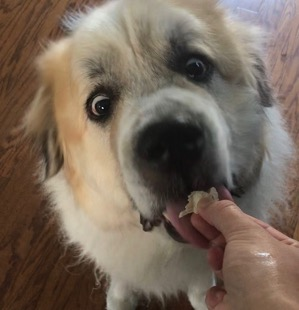
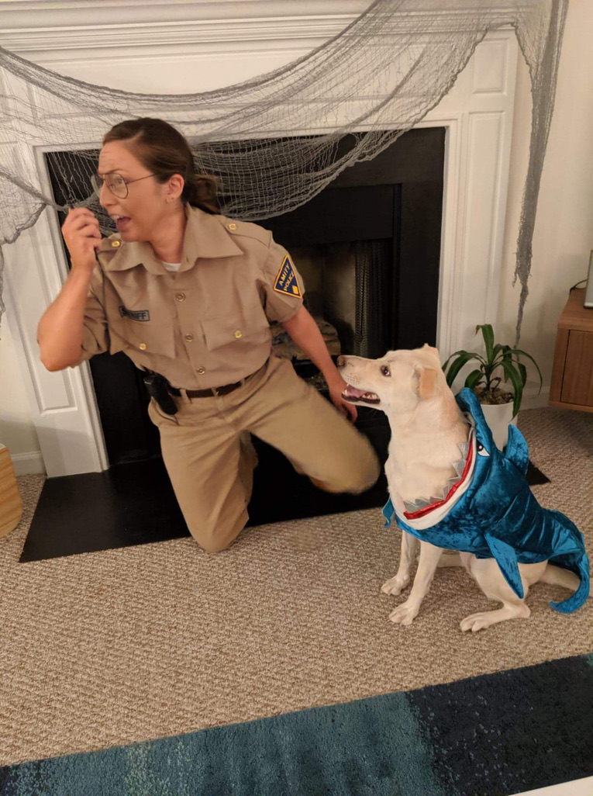
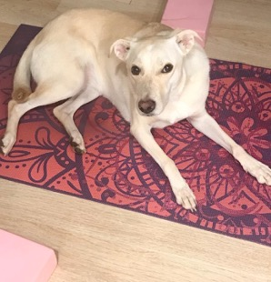
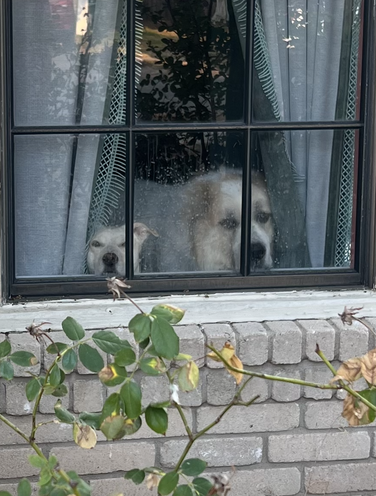
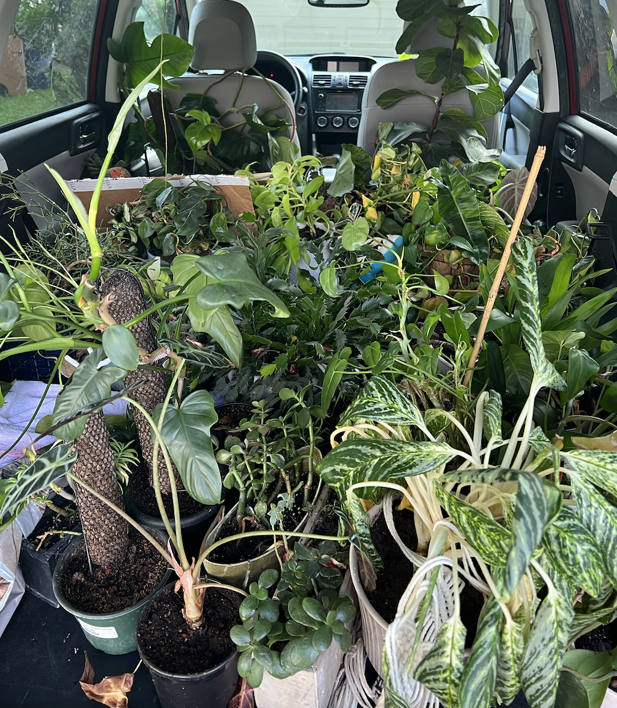
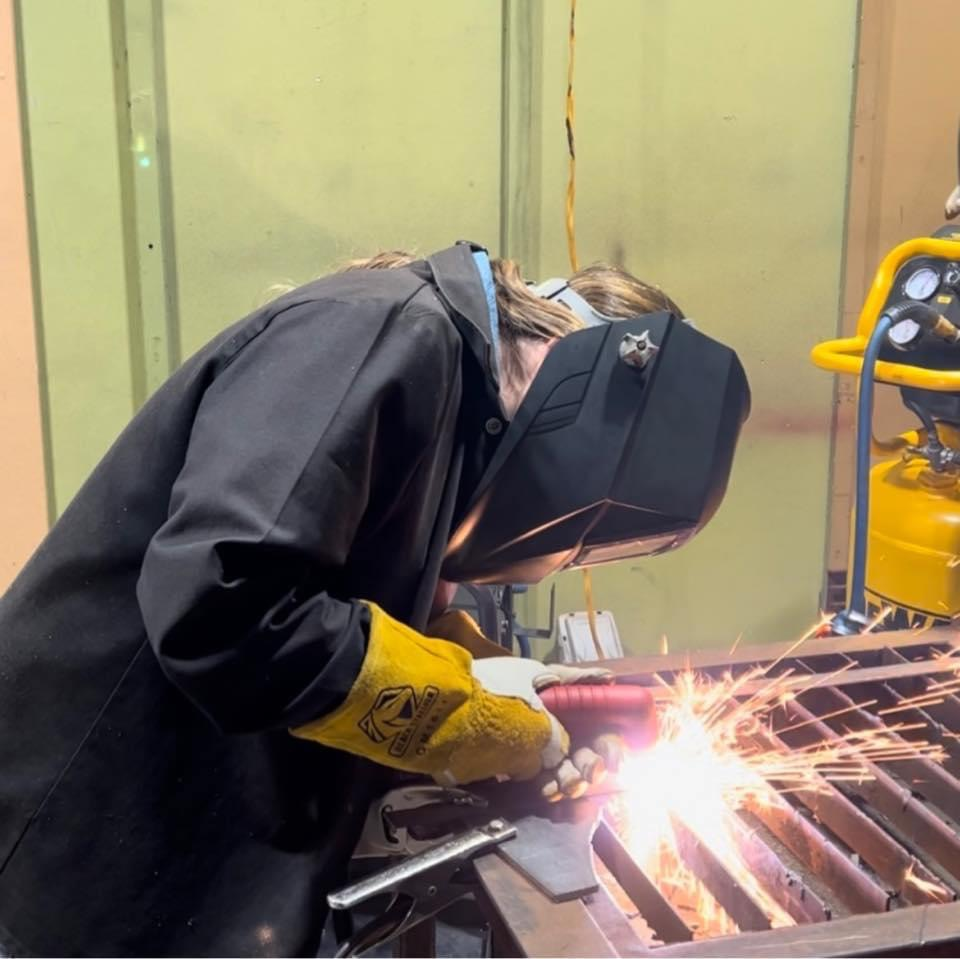
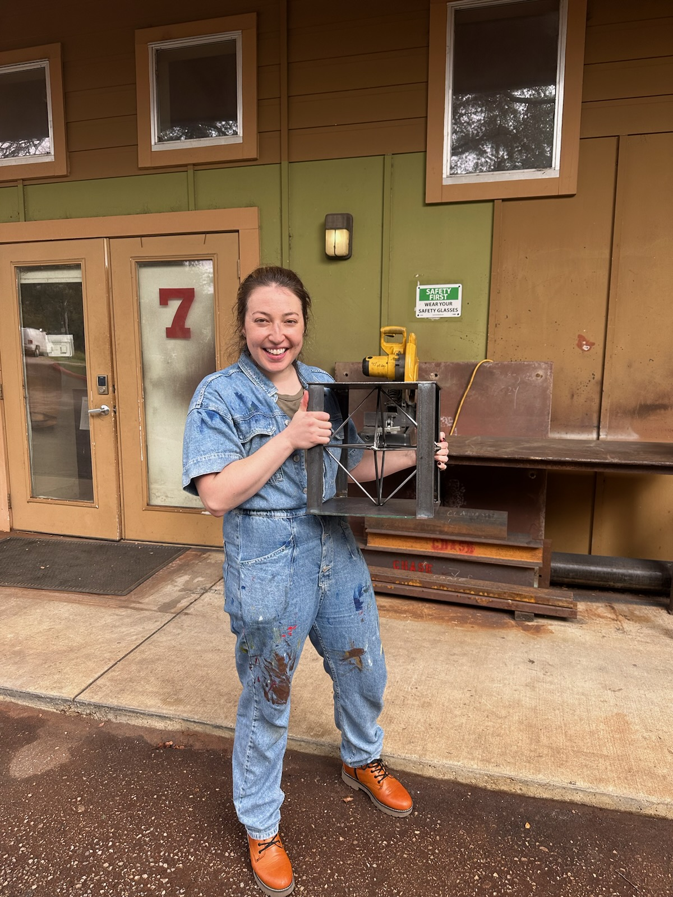
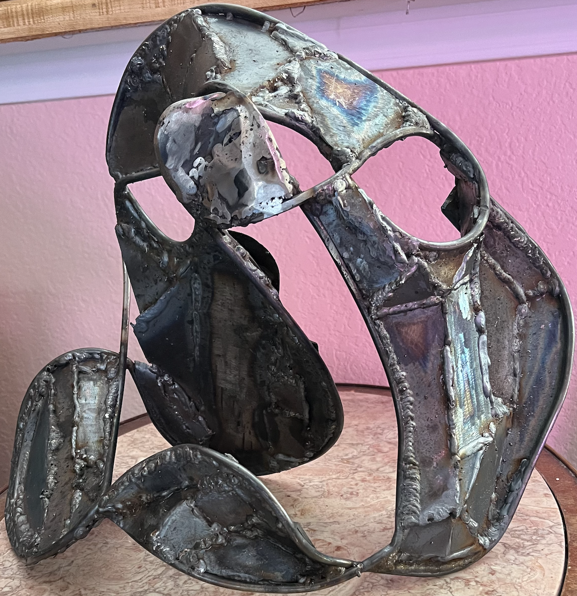
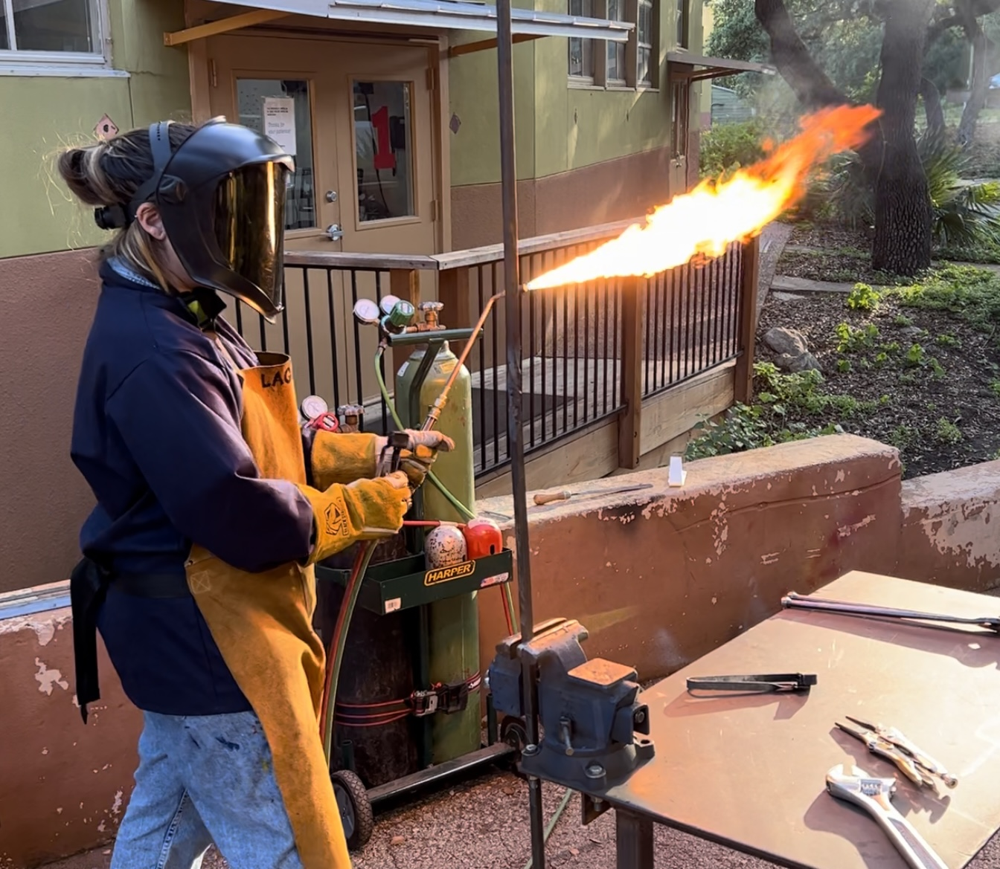

Kate Pearce
About Me
I like other stuff, too. A non-exhaustive list: dogs, metal-working, pottery, and occasionally touching grass.
Dogs
I have one dog and one polar bear. You'll probably see and/or hear them in Zoom meetings, along with my human family.
Little Bit--or Lil Bit (the official spelling has never been established)--is my smallest and most spoiled foster failure, but what she lacks in stature she makes up for in indignant boo-woo-woo's. Likely to sleep in cute but unnatural positions.
Ada, our resident polar bear, has been described as having "impenetrable derp." She loves everyone and everything, but she loves Bit most of all. Bit had no comment.
Both Bit and Ada belong to the cult of Mobius (Moby, to his friends, of which he had exactly 3). The handsomest boy to ever cross the rainbow bridge.




Plants
My house has been overtaken by an excessive number of plants, collectively known as "Audrey III." If you want some cuttings, let me know!

Art
For a while now, I have been very into metal working. It's like meditation, but with high stakes and fire. My style has recently transitioned into fluid, organic structures because of the challenge of realizing them in steel. I also love to draw and paint and throw pottery, and I like to look at what other people have drawn and painted and thrown.



